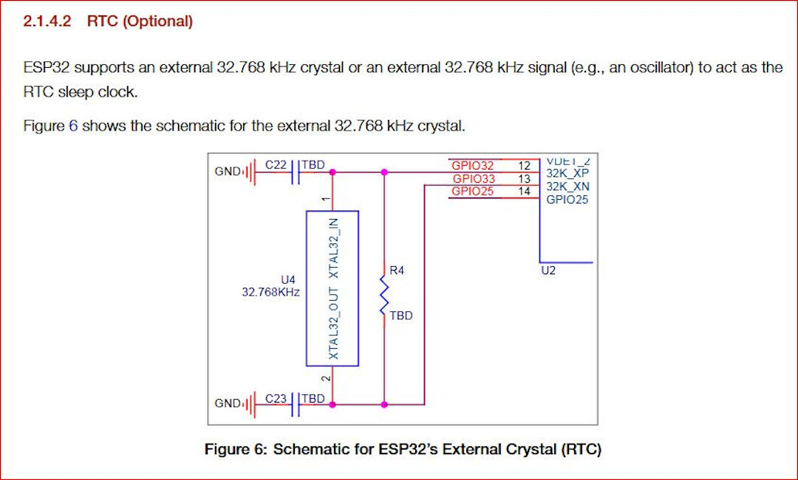
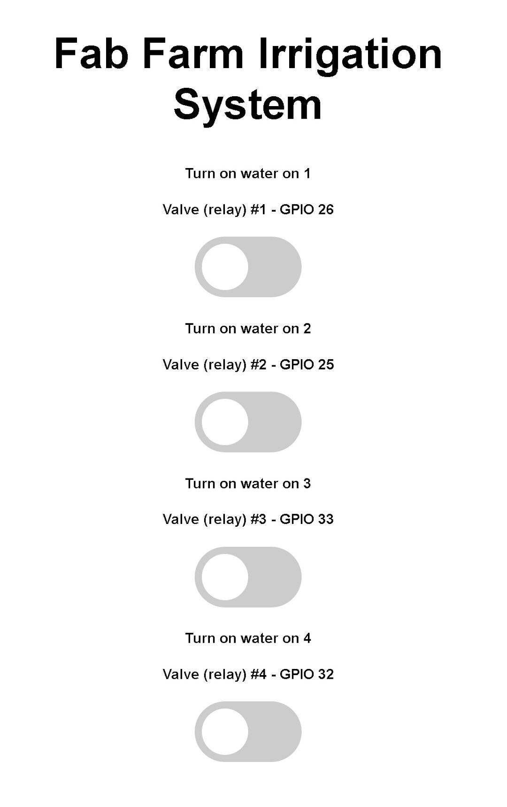
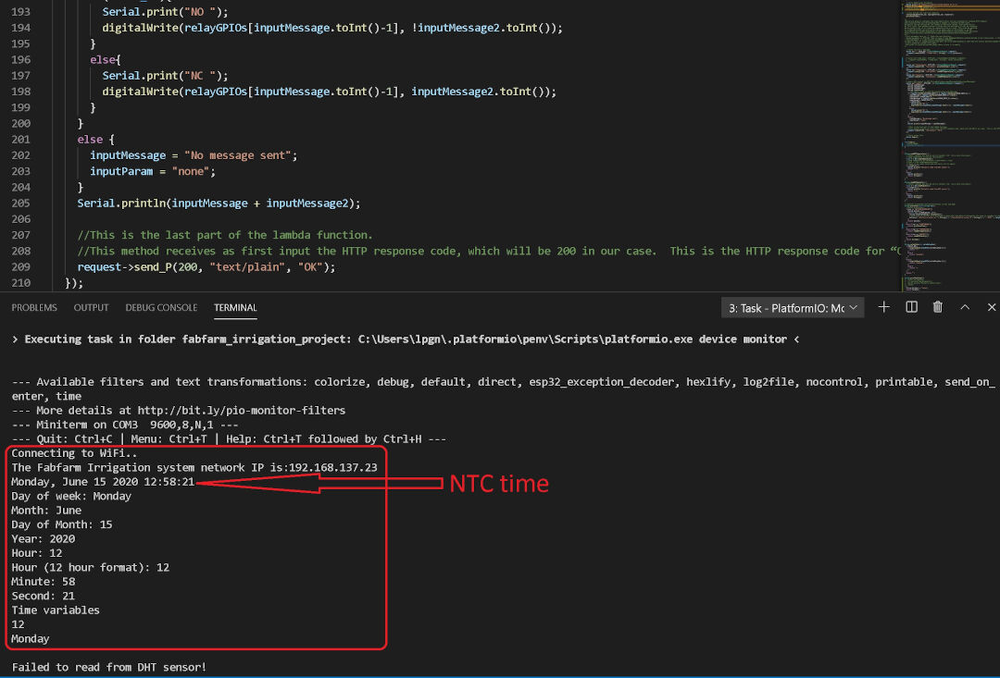

Final Project Diary and Concept Update
6th of June, 2020
Today I decided to change my final project again!
I needed to have irrigation working in the farm, I did not need more chicken right now, so well I changed again. It doesn't mean I gave up on the Chicken egg incubator. It only means I might have TWO final projects :-). Well maybe not, the reality is that I will focus on the irrigation, my fruit trees need the water, the greenhouse too. I have so much need for it right now and I need it to to work well that it makes it really worth the change.
So no Chickens! YES WATER!, maybe also Chickens.
Design of my new proposition
As I am writing this there are no current design files, there is a sketch of a code and there is a prototype on a breadboard!
There are in the other hand requirements for the hardware and for the software:
Software Requirements and stage
- Simplify the code creating more functions;
- Try to separate the HTML part for a cleaner code;
- Improve the appearance/Interface of the code;
- Add readings to HTML;
- Add a log of occurrences like over current;
- Add more safety for the equipment;
- Add a phone interface (APP);
- Add function to set current time;
- Add renaming function to each relay so one can relate the relay to the area of interest or at least rename relays to actual areas of the farm.
Design Requirements and situation
- Need to be water resistant at least;
7th of June, 2020
As of today 07th of June 2020 the development is like this.

The code running on this setup can be found on the Fabfarm Github Autovalve
Shakeel one of our volunteers managed to create a version that runs on a ESP8266 that can be found in the same repo here. Due to the Pandemic situation he left us in a hurry and did not have time to test his code so it worked but not stable due to the fact that he heroically attempted to share the analog pin with the wifi, leading to drops in the wifi that rendered using the system almost impossible. This is the code that I started with.
8th of June, 2020
After many hours trying to understand the code I managed to port Shakeel's code to a ESP32 and also split the file with each function on a separate file.
In this video I show the progress I did so far in the merging the codes and having it work in the ESP32
To port the code to ESP32 might be simple for a programmer but it took many hours for me.
Steps:
- Separated everything that was a function already to its own file to make it more readable;
- Opened then another session of the Arduino IDE and started copying every part of the code line by line to the new session, in this session I renamed the main file to "esp32irrigation"
- Remapped the pins to ESP32 pins
- Run beautify on the HTML on Brackets
- Organized the code so pins are on top
- Created variables for the RTC pins
- Commented parts of the code that print error to the serial monitor
The code is too big for displaying on the HTML so I will leave a link for the state of the code as this early morning: code here.
Here in this video you can see the testing setup of the current irrigation system of the farm
9th of June, 2020
Today after testing the relays I realized that some relays work some not. After testing on the lab power supply directly with 5 volts applied to the signal pin I believe that this is due to low voltage being supplied by the esp32 or the signal voltage.
I watched then the Great Scott's video on Youtube about relays and optocouplers.
I will make sure the relays have at least a 5 volts power supply. Which are their required voltage according to the datasheet. The signal should be fine at 3.3. Will be tested in situ.

The other point is the current reading that is completely wrong. In order to have the irrigation system working I will have to run it without current sensing until debugged.
10th of June, 2020
After the tests, the conclusion to the voltage problem is that the esp32 should not supply power to the relay, that should be supplied from an external power source, set at 5 volts. The signal can come from the esp32 unchanged but the esp32 should share the same ground.
More changes in the code:
- Increased the interval the time is displayed from 3000 to 5000 ms (5s) in the variable
RTCtimeInterval - Increased the interval the setup is displayed from 10000 to 30000 ms (30s) in the variable
configTimeInterval - Set recognizable names to the relay's HTML interface
- Cleaned up a bit more on the serial monitor by removing seconds from the setting display
I will place the setup back to work today in the morning and set times for each irrigation and field test the esp32 irrigation module.
Strangely the external RTC clock is not keeping accurate time. I will look into utilizing internal clock with external battery in case of power failure.
According to this closed issue discussion at the esp repo at Github and this esp accuracy topic the internal clock will delay "Internal RTC clock frequency error is about 5%", this can be solved with an external crystal of 32.768KHz crystal assembled according to the schematics below:
Another solution would be to have the esp always connected to the Internet and grabbing the time from the Internet updates to compensate for inaccuracy.

After wakeup update
Today I went into installing the temporary testing setup. I troubleshoot a few problems.
- Setup was not working when disconnected from computer: -solution power wiring was not correct, ended up connecting 2 USB cables one for the ESP32 and another for the relays, they both share the same ground, also I might have solved the RTC clock problem as well with the same approach.
This is how the prototype looks now:


After the tests I went back to the code for more customization.
I first watched a series of videos on Youtube about functions really create and then started creating even more functions.
Basically I went into looking how to reduce code repetitions and how to send a value to a function
From the code available I created this function:
void turnOffRelay(int valveHere){
// wait then turn valve relay OFF
Serial.print("Waiting ");
Serial.print(waitTimeValveOff / 1000);
Serial.println("s before deactivating Valve Relay 3.");
delay(waitTimeValveOff);
digitalWrite(valveHere, LOW);
valveHere = 0;
Serial.print("*** Valve Relay ");
Serial.print(valveHere);
Serial.println("3 turned OFF ***");
}Every time I want to call this function I use
{
int valveHere = valveRelay3;
turnOffRelay (valveHere);
}The reason I use the {} is because I had to declare the local variable valveHere this way I could replace only that piece of code each time I called the function.
Technically calling that function would be just having this code here turnOffRelay (valveHere); but that would not work alone as I am always replacing the valve relay pin with int valveHere = valveRelay3;
I still haven't tested the behaviour but at least it compiles :-)
9th of June, 2020
I burned it on the ESP32 and the behavior is unexpected. The function keeps printing again and again I believe I need to send back the state of one variable and I did not do that. I will try using the code return variable; to do it and then test but before I will watch again the functions video to better understand it.
13th of June, 2020
Argh... OK Long time no updates, well the last code uploaded works and I have some functions but not happy yet as Its working on Arduino but not Platformio. What I learned so far is that Arduino IDE does a lot "under the hood" and with platformio you need to setup it in more detail.
Read the following
I ended up being able to write a file to the spiffs using platformio. I already were able to do it with arduino but without really understanding how now maybe I think I got it so to do that I had to setup the file platformio.ini and the tree directory following a set of steps so lets see:
- I created a new project file in the "projects" tab area in platformio
- Then I created a data folder in the same level as the src folder. Another option is to include in the platformio.ini file a different path for the data file.
- Then with the board connected I run
pio run -t uploadfs - Had to remove time library from platformio as it was conflicting with ESPAsyncWebServer and here is where I found the relevant information.
It worked.
With that I started understanding how I did not know what I was doing. The code I started with had the html included in the Arduino Sketch. That bothered me. Now with this new understanding I can have it apart from the sketch file.
Then I found this tutorial: ESP32 Web Server using SPIFFS
And this in case I want to use Arduino IDE plug in for the upload process.
I really wish I understood it better before! So many days I spent on it!
The C++ code till now.
/****************************************************************************
* Aknowledments *
* by LucioPGN *
****************************************************************************/
/* Up to this date: 07th of June 2020 I don't consider myself a programer
* so I need to stand on top of giants sholders for my programing projects:
* A Portion of this code was based on Rui Santos Code;
* A Portion of this code was based on losely based Shakeels code for ESP8266;
* A Portion of this code was based on several websites I lost track of....!
* My contributions:
* -So far I made it work on platformio :), that took me quite a lot of time
* -That means:
* +created a new project;
* +created a folder named data under the main folder (fabfarm_irrigation)
* +linked the platformio.ini to the folder of the project + the data folder
* +linked the needed libraries to their github repo in the platformio.ini
* +found a conflict with time library and ESPAsyncWebserverLibrary can be solved by renaming time library or by removing it
* +Made it work with a separate HTML file under the data folder using SPIFFS
* +I can load the data to Spiffs inside platformio
* Things I still want to program for my final project:
* -so far I ported Shakeels code into ESP32;
* -simplify the code creating functions rather than repeating the code;
* -try to separate the HTML part for a cleaner code (this applies to maybe mix up the other previous code to this);
* -Improve the appearance/Interface of the code
* -Add readings to HTML
* -Add a log of occurrences like over current
* -Add more safety for the equipment
* -Add a phone interface (APP)
* -Add function to set current time
* -Add renaming function to each relay so one can relate the relay to the area of interest or at least rename relays to actual areas of the farm.
*
****************************************************************************/
//Required Libraries
#include "WiFi.h"
#include "ESPAsyncWebServer.h"
#include "SPIFFS.h"
#include <AsyncTCP.h>
// Network Credentials
const char* ssid = "rato";
const char* password = "imakestuff";
//Start the Async Web Server listening on port 80
AsyncWebServer server(80);
// Set to true to define Relay as Normally Open (NO)
#define RELAY_NO false
// Set number of relays, will be used in the array
#define NUM_RELAYS 4
// Assign each GPIO to a relay
int relayGPIOs[NUM_RELAYS] = {26, 25, 33, 32};
//
const char* PARAM_INPUT_1 = "relay";
const char* PARAM_INPUT_2 = "state";
// Replaces placeholder with button section in your web page
String processor(const String& var){
//Serial.println(var);
if(var == "BUTTONPLACEHOLDER"){
String buttons ="";
for(int i=1; i<=NUM_RELAYS; i++){
String relayStateValue = relayState(i);
//Here parts of the HTML will be parsed to index.html like Relay # followed by its value in variable for the GPIO numbers
buttons+= "<h4>Turn on water on " + String(i) + "</h4><h4>Valve (relay) #" + String(i) + " - GPIO " + relayGPIOs[i-1] + "</h4><label class=\"switch\"><input type=\"checkbox\" onchange=\"toggleCheckbox(this)\" id=\"" + String(i) + "\" "+ relayStateValue +"><span class=\"slider\"></span></label>";
}
return buttons;
}
return String();
}
String relayState(int valveRelayNum){
if(RELAY_NO){
if(digitalRead(relayGPIOs[valveRelayNum-1])){
return "";
}
else {
return "checked";
}
}
else {
if(digitalRead(relayGPIOs[valveRelayNum-1])){
return "checked";
}
else {
return "";
}
}
return "";
}
void setup(){
// Serial port for debugging purposes
Serial.begin(9600);
// Initialize SPIFFS
if(!SPIFFS.begin(true)){
Serial.println("An Error has occurred while mounting SPIFFS");
return;
}
// Set all relays to off when the program starts - if set to Normally Open (NO), the relay is off when you set the relay to HIGH
for(int i=1; i<=NUM_RELAYS; i++){
pinMode(relayGPIOs[i-1], OUTPUT);
if(RELAY_NO){
digitalWrite(relayGPIOs[i-1], HIGH);
}
else{
digitalWrite(relayGPIOs[i-1], LOW);
}
}
// Connect the ESP to the Wi-Fi using the credentials entered before
WiFi.begin(ssid, password);
while (WiFi.status() != WL_CONNECTED) {
delay(1000);
Serial.println("Connecting to WiFi..");
}
// Print ESP32 Local IP Address
Serial.println(WiFi.localIP());
/*
*Now we are going to configure the route where server will be listening for incoming HTTP requests
and a function that will be executed when a request is received on that route.
We specify this by calling the "on" method on the server object. With server.on(){};
As first input, this method receives a string with the path where it will be listening.
We are going to set it to listen for requests on the "root" route. This could be anything.
It is basically what you write after the ip adress when in the browser or an APP.
This website has a great explanation of the ESP32 Arduino: Asynchronous HTTP web server
https://techtutorialsx.com/2017/12/01/esp32-arduino-asynchronous-http-webserver/
So...
- First parameter here is: "/" thats the root directory.
- Second parameter is HTTP_GET thats an enum of type WebRequestMethod a method defined in the library here --> https://github.com/me-no-dev/ESPAsyncWebServer/blob/63b5303880023f17e1bca517ac593d8a33955e94/src/ESPAsyncWebServer.h
- Third parameter is a the function AsyncWebServerRequest
So there is this c++ lambda function used here. My litle understanding is that they are locally declared unamed function this means they dont have a name and are declared locally :-)
I don't grasp the concept fully haha.
the syntax is [captures](params){body} where in here [] is empity
*/
// Route for root / web page
server.on("/", HTTP_GET, [](AsyncWebServerRequest *request){
request->send(SPIFFS, "/index.html", String(), false, processor);
});
// Send a GET request to <ESP_IP>/update?relay=<inputMessage>&state=<inputMessage2>
server.on("/update", HTTP_GET, [] (AsyncWebServerRequest *request) {
String inputMessage;
String inputParam;
String inputMessage2;
String inputParam2;
// GET input1 value on <ESP_IP>/update?relay=<inputMessage>
if (request->hasParam(PARAM_INPUT_1) & request->hasParam(PARAM_INPUT_2)) {
inputMessage = request->getParam(PARAM_INPUT_1)->value();
inputParam = PARAM_INPUT_1;
inputMessage2 = request->getParam(PARAM_INPUT_2)->value();
inputParam2 = PARAM_INPUT_2;
if(RELAY_NO){
Serial.print("NO ");
digitalWrite(relayGPIOs[inputMessage.toInt()-1], !inputMessage2.toInt());
}
else{
Serial.print("NC ");
digitalWrite(relayGPIOs[inputMessage.toInt()-1], inputMessage2.toInt());
}
}
else {
inputMessage = "No message sent";
inputParam = "none";
}
Serial.println(inputMessage + inputMessage2);
//This is the last part of the lambda function.
//This method receives as first input the HTTP response code, which will be 200 in our case. This is the HTTP response code for "OK".
request->send_P(200, "text/plain", "OK");
});
// Start server here
server.begin();
}
void loop(){
}
The HTML code till now.
<!DOCTYPE HTML><html>
<head>
<meta name="viewport" content="width=device-width, initial-scale=1">
<style>
html {font-family: Arial; display: inline-block; text-align: center;}
h2 {font-size: 3.0rem;}
p {font-size: 3.0rem;}
body {max-width: 600px; margin:0px auto; padding-bottom: 25px;}
.switch {position: relative; display: inline-block; width: 120px; height: 68px}
.switch input {display: none}
.slider {position: absolute; top: 0; left: 0; right: 0; bottom: 0; background-color: #ccc; border-radius: 34px}
.slider:before {position: absolute; content: ""; height: 52px; width: 52px; left: 8px; bottom: 8px; background-color: #fff; -webkit-transition: .4s; transition: .4s; border-radius: 68px}
input:checked+.slider {background-color: #2196F3}
input:checked+.slider:before {-webkit-transform: translateX(52px); -ms-transform: translateX(52px); transform: translateX(52px)}
</style>
</head>
<body>
<h2>Fab Farm Irrigation System</h2>
%BUTTONPLACEHOLDER%
<script>function toggleCheckbox(element) {
var xhr = new XMLHttpRequest();
if(element.checked){ xhr.open("GET", "/update?relay="+element.id+"&state=1", true); }
else { xhr.open("GET", "/update?relay="+element.id+"&state=0", true); }
xhr.send();
}</script>
</body>
</html>
It currently looks like this:

The appearance and code right now are pretty much similar to that in the Random Nerd tutorial Website for Relays controlled with ESP32.
The main difference from the original code is that it runs on Platformio for VScode and also it uses a separate folder structure for the html file that is written in the SPIFFS of the ESP.
14th of June, 2020
After all this personal breakthrough I decided I need to start the code from scratch and use only the general Algorithm of the current irrigation system installed in the farm. The reason is that the code is too messy and repetitive, the approaches found in the last the sources of yesterday made me realize its faster to add the features on the last code one by one than to recode everything from the code currently running on the farm.
I will today attempt to add updated information like temperature and humidity information. I am basing again on the works by Rui Santos on this page about a weather station. With this approach I believe I will be able to also include time of the day using a RTC clock.
The schematics for connecting the DHT22 are from his Website:

It uses a 4.7k Ohm Resistor as a pull up.
After some work this is how the page looks:

The reason the temperature now is negative I believe is because the temperature and humidity sensor is either faulty or my wirings are a bit loose, I believe once I mill my own board and solder everything instead of plunging on a breadboard this will be more reliable, anyway I am getting the values and being able to show them on the web interface.
On Serial monitor I am currently being able to display the Internet time as well as the Network information now I need to find out a way to get the time value and display in the web interface. Currently I am sending through code the word TESTE and that is being displayed instead of the time.

15th of June, 2020
Today I will focus on getting the time displayed in the web interface and perhaps create a function to turn on the relay on specific set time.
8:44 Update:
- After the whole day trying I were able to display the machine time and the irrigation system (ESP32) time.
Now the interface looks like this:

When I grow up I want to be a programmer :-) and not spend an entire day on something someone puts together in a few lines!
My struggles were stopped by a saint with this answer on stack overflow.
Here follows the original function posted there:
void printLocalTime()
{
time_t rawtime;
struct tm timeinfo;
if(!getLocalTime(&timeinfo))
{
Serial.println("Failed to obtain time");
return;
}
char timeStringBuff[50]; //50 chars should be enough
strftime(timeStringBuff, sizeof(timeStringBuff), "%A, %B %d %Y %H:%M:%S", &timeinfo);
//print like "const char*"
Serial.println(timeStringBuff);
//Optional: Construct String object
String asString(timeStringBuff);
}
With minor modifications by changing it from a void function into a String function and adding a return that I named "timeAsAString":
//this function was found here https://arduino.stackexchange.com/questions/52676/how-do-you-convert-a-formatted-print-statement-into-a-string-variable
//I did a minor change so instead of a void function it now returns a string to be used to show time in the webinterface
String printFarmTime()
{
time_t rawtime;
struct tm timeinfo;
getLocalTime(&timeinfo);
char timeStringBuff[50]; //50 chars should be enough
strftime(timeStringBuff, sizeof(timeStringBuff), "%A, %B %d %Y %H:%M:%S", &timeinfo);
//print like "const char*"
Serial.println(timeStringBuff);
//Construct to create the String object
String timeAsAString(timeStringBuff);
return timeAsAString;
}
So with that out of the way I will try to create the functions to turn on and off the relays according to the time scheduled. Let's see if I can finish it by today...
16th of June, 2020
No I did not work on it I was tired, so today I made a few sketches.

In this Sketch I show how the package shape is going to be and how the web interface is going to be as well.
I am also reading about String as well as its manipulation.
I could follow an approach of splitting the dates as a String and convert it to other types of values for the operations I intend. Or another possibility is to get the data in the type I need from the beginning, although I like the latter better I haven't find a solution for it yet as I don't understand the getLocalTime() function well yet. So I will read more on it now.
Wait... that was fast! I found a post that answers my need. Here it is:

So I based on the post above to create a function below:
int gimeTime(char what) {
int OnlyYear;
int onlyMonth;
int onlyDay;
int onlyHour;
int onlyMin;
int onlySec;
struct tm timeinfo;
if(!getLocalTime(&timeinfo)){
Serial.println("Failed to obtain time");
//return;
}
onlyHour = timeinfo.tm_hour;
onlyMin = timeinfo.tm_min;
onlySec = timeinfo.tm_sec;
onlyDay = timeinfo.tm_mday;
onlyMonth = timeinfo.tm_mon + 1;
OnlyYear = timeinfo.tm_year +1900;
switch (what) {
case 1:
return onlyHour;
break;
case 2:
return onlyMin;
break;
case 3:
return onlySec;
break;
default:
// if nothing else matches, do the default
// default is optional
break;
}
}
That's it now I can finally work on the timer scheduling code. By the way, I spent almost the whole day trying a simpler way to get the times but just couldn't as I am struggling to understand the (Struct) type. Well, maybe will go back to it in the future but for now, it's good.
17th of June, 2020
Super early morning update:
I am very frustrated, I need to move to the atoms and wrap up the bits part of my project.
At late night the max I moved forward was making a small function to turn off the relays, here it is:
int zoneStartStop (int zone, int startStop){
int waitTime = 1000;
if (startStop == 1){
digitalWrite(relayGPIOs[zone], startStop);
Serial.print("*** Zone Valve");
Serial.print(zone);
Serial.println("ON ***");
delay(waitTime);
digitalWrite(pumpGpio, startStop);
Serial.print("*** Pump turned ON ***");
}
else{
digitalWrite(relayGPIOs[zone], startStop);
Serial.print("*** Zone Valve");
Serial.print(zone);
Serial.println("OFF ***");
delay(waitTime);
digitalWrite(pumpGpio, startStop);
Serial.print("*** Pump turned ON ***");
}
}It's a start but not yet there and I haven't tested.
Morning Update:
So I will now look into another example to set a timer again by Rui Santos, it's here, maybe I can change it a bit and integrate to my code and add a start time then using the slide to set how long in minutes it will run. That would be enough for now!
So far I made the code compatible to Platformio and also separated the index.html file from the C++ code and placed it in its own folder to be saved by the save to Spiffs routine, that I described on 13/06/2020.
References
Footnote
Links: